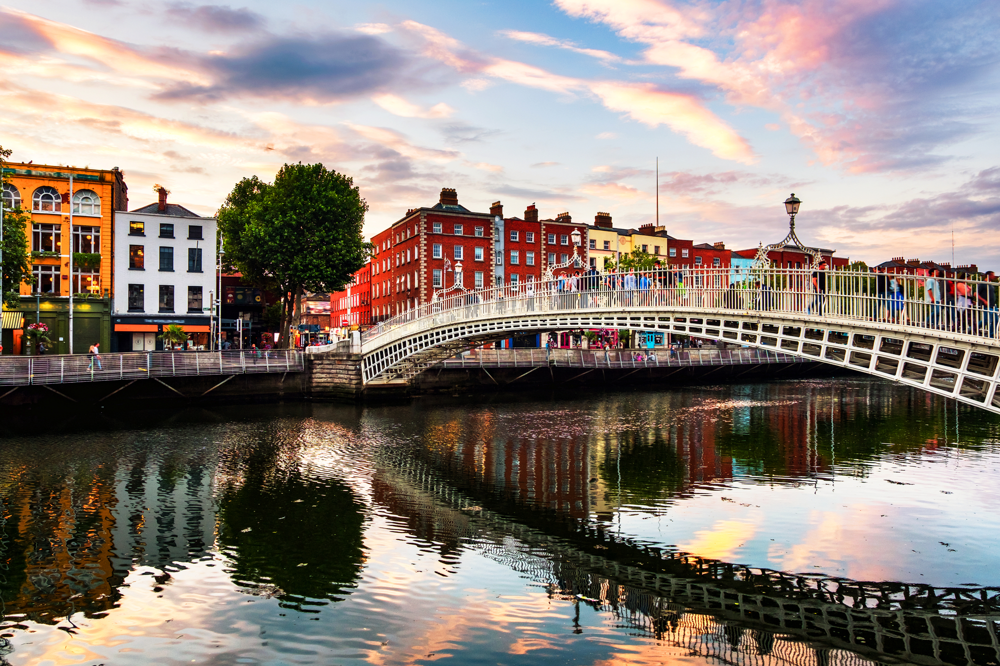

Dublin
Dublin offers an iconic capital experience defined by centuries of rich history, world-renowned brewing heritage, and a lively cultural scene. Must-see city highlights include touring the immersive Guinness Storehouse, admiring the ancient illuminated manuscript of the Book of Kells at Trinity College, reflecting on Ireland's path to independence at Kilmainham Gaol, and soaking in the live traditional music throughout the historic Temple Bar district.
Best for: History, shopping and nightlife.